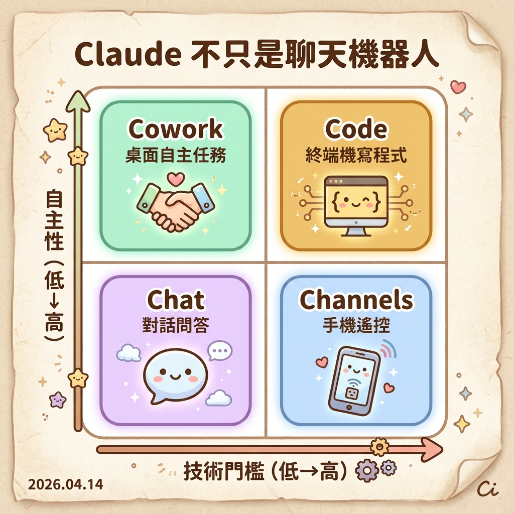
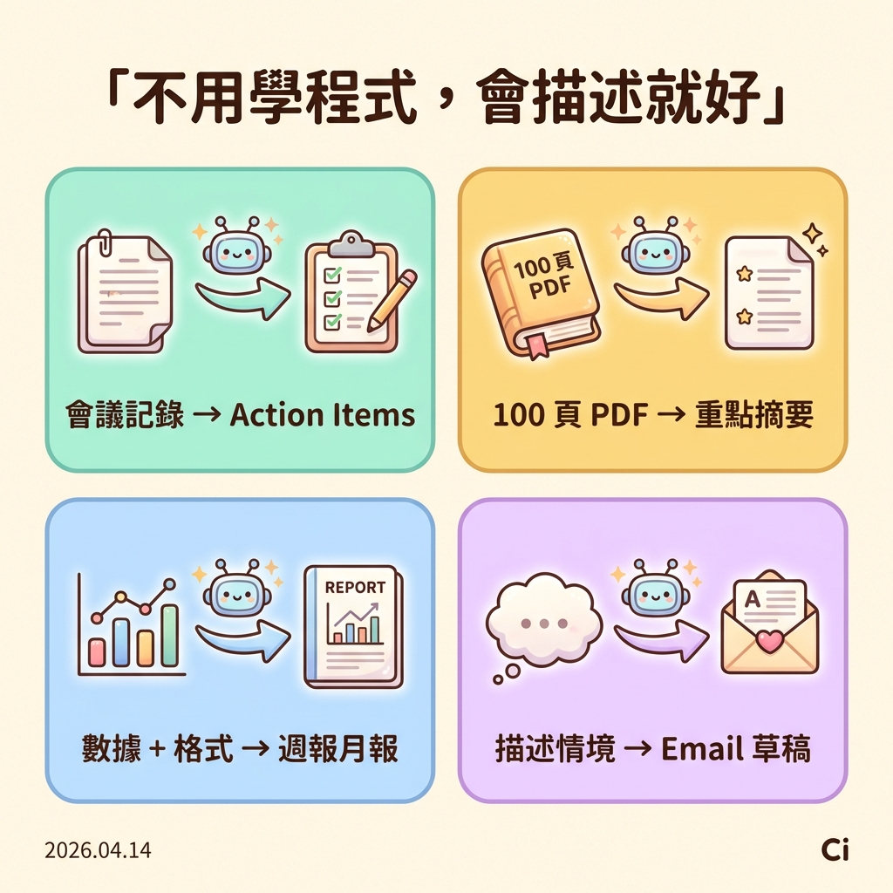
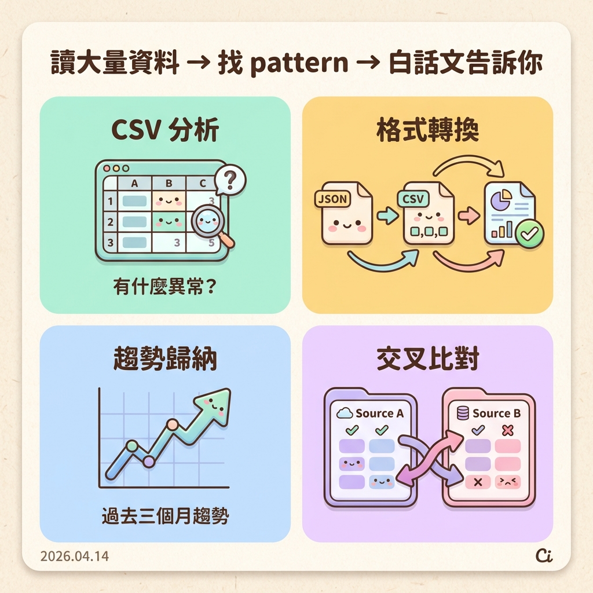
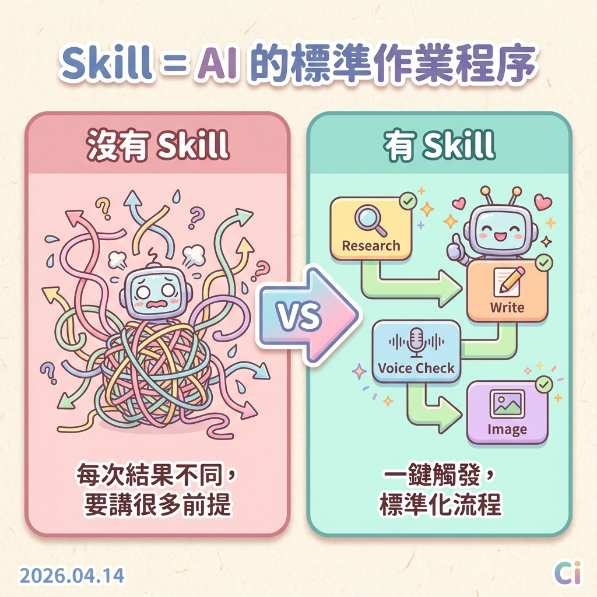
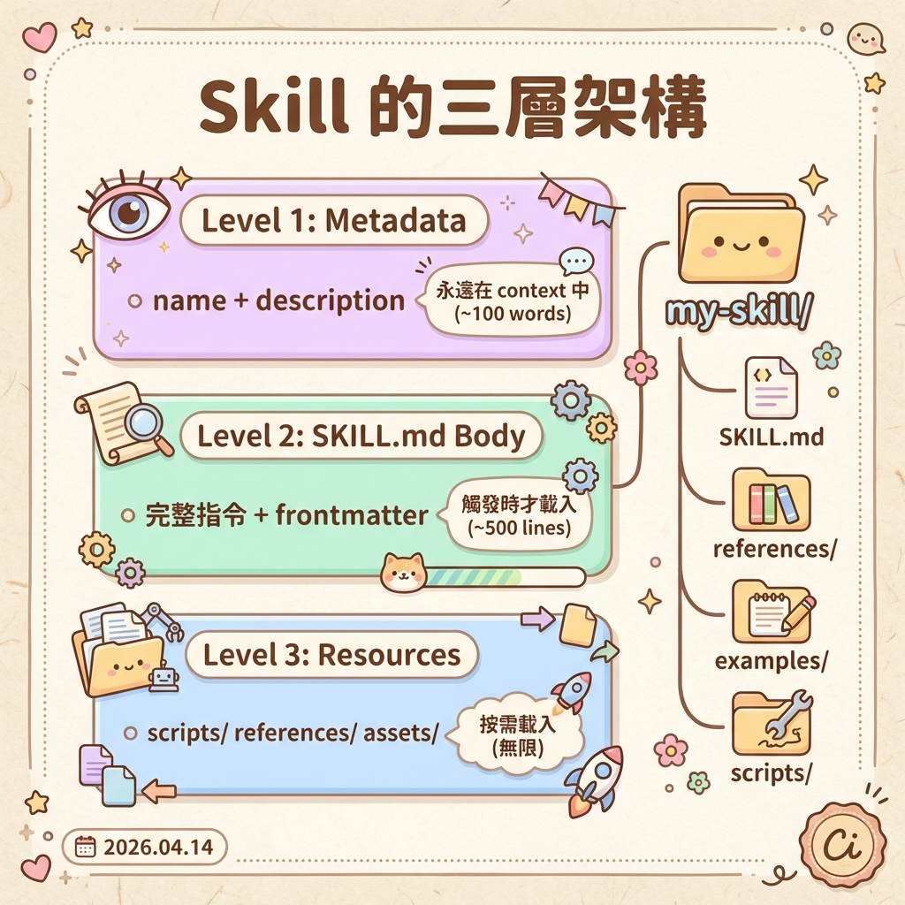
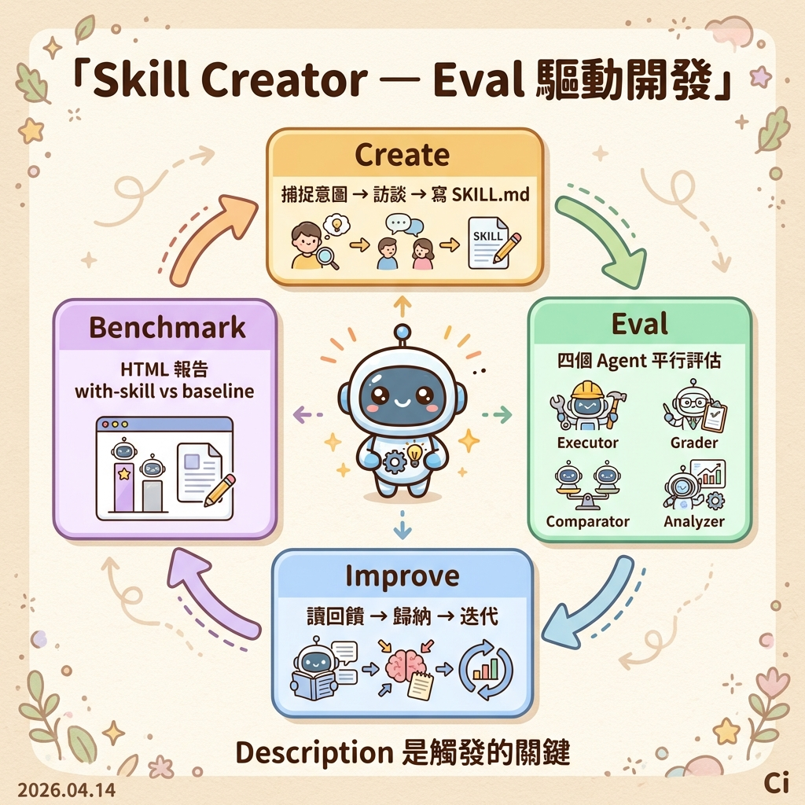
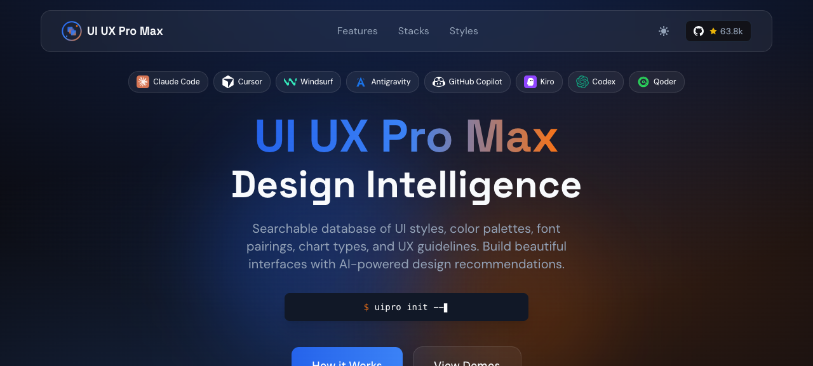
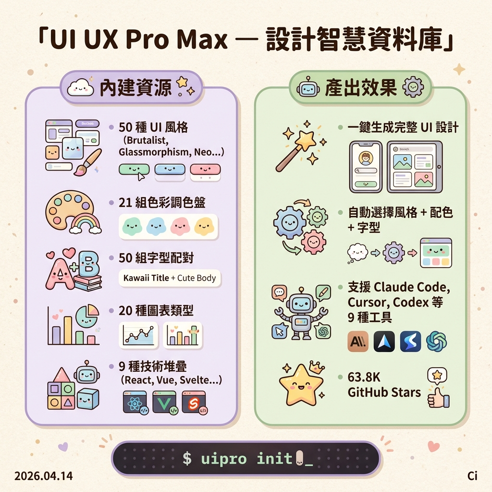

如何使用 Claude AI，讓它更聰明、更了解你的偏好
Jason
Claude AI 分享會
Senior Full-Stack Engineer (ClassSwift Backend)
AI-Driven Development 實戰篇：30 天 Side Project 開發全紀錄（佳作）
不是用 AI，而是和 AI 一起工作：一場來自開發現場的 AI 流程導入
打造多視窗跨平台應用：一個基於 Electron + React 的企業實戰案例
這些事不難，但吃掉你的時間。
今天帶你認識 Claude 的完整生態系
不管你是不是工程師，都有東西帶走。
今天帶你把 Claude 的完整生態系都摸一遍

大部分人停在 Chat，但真正的跳躍在 Cowork 和 Code
你做什麼：問問題
AI 做什麼：回答
你做什麼：給目標
AI 做什麼：規劃 + 執行 + 回報
今天的關鍵字：你怎麼讓 AI 幫你做事
PM/設計師 全員適用

你不用學程式
只要會描述你要什麼
你跟 Claude 說：
重點：你只要用白話文描述需求，
Claude 幫你整理成結構化的 User Story
Claude 產出：

AI 最擅長：
讀大量資料 → 找 pattern → 白話文告訴你
你跟 Claude 說：
這就是今天的真實案例：
你們填的問卷，我丟給 Claude，
它幫我分析出今天該講什麼
Claude 產出：
三種做法：Projects / Custom Instructions / CLAUDE.md
讓 AI 記住你是誰，是效率翻倍的第一步 — 接下來一頁一頁看
適合放什麼？
角色描述、格式範本、常用指令、
產品文件、術語表
Projects = 專案級記憶
Custom Instructions = 全域級記憶
Claude Code 每次啟動自動讀取的備忘錄。
分層設計，按需載入：
| 該放 | 不該放 |
|---|---|
| Claude 猜不到的指令 | 讀 code 就能知道的事 |
| 非標準的 code style | 標準語言慣例 |
| 測試指令和偏好 | 詳細 API 文件 |
| repo 慣例 | 經常變動的資訊 |
| 常見地雷 | 「寫乾淨的 code」 |
/gws-workflow-standup-report
今日會議 + 待辦事項
自動整合 Calendar + Tasks
/gws-gmail-triage 看未讀摘要
/gws-gmail-reply 自動回覆
處理 threading，不會寄錯
/gws-workflow-meeting-prep
議程 + 出席者 + 相關文件
一鍵搞定會前功課
/gws-workflow-weekly-digest
本週會議 + 未讀信件數
Claude Code 不只能寫程式
Gmail、Calendar、Tasks — Claude Code 直接操作你的 Google Workspace
全員適用
Skills — 把你的知識裝進 AI
Plugins — 把你的工具接上 AI

每次結果不同，要講很多前提
按同一流程，前提都寫好了
兩種取得方式：
一個指令完成整個 Code Review 流程
Skills 不是越多越好
品質參差不齊的 Skills 會讓 AI 花更多時間篩選
只保留少量優質、架構清晰的就好

三層載入機制：
Level 1: Metadata
永遠在 context 中 — name + description (~100 words)
Level 2: SKILL.md Body
Skill 觸發時載入 — 完整指令 (~500 lines)
Level 3: Bundled Resources
按需載入 — scripts/ references/ assets/ (無限)
SKILL.md 結構：
Frontmatter 關鍵欄位：
description — Claude 決定何時觸發的依據（最重要！）disable-model-invocation: true — 只有你能觸發allowed-tools — 限制可用工具（唯讀：Read Grep Glob）context: fork — 在獨立 subagent 中執行model — 指定模型（sonnet 省成本）
四個模式：
1. Create
捕捉意圖 → 訪談
→ 寫 SKILL.md
→ 建測試案例
2. Eval
四個 sub-agent 平行：
Executor・Grader
Comparator・Analyzer
3. Improve
根據回饋迭代：
不要 overfit
保持精簡・解釋 why
4. Benchmark
生成 HTML 報告
比較 with-skill
vs baseline
Description 是觸發的關鍵：
Bad: "How to build a dashboard"
Good: "How to build a dashboard to display internal data. Use when user mentions dashboards, data visualization, internal metrics — even if they don't explicitly ask for a 'dashboard.'"
Eval Pipeline 流程：
迭代原則：
「從回饋中歸納，不要 overfit 到測試案例」
「移除沒用的部分 — 看 transcript 找浪費」
「解釋 why，不要用 ALWAYS/NEVER」
一般版 = Plugins（Chat/Cowork 介面安裝）
工程師版 = MCP Servers（設定檔配置）
本質是同一套協定
資料連接
Notion
Google Drive
工具操作
Gmail
Calendar
專業能力
Playwright
瀏覽器
搜尋
Context7
Firecrawl
資料庫
PostgreSQL
Supabase
專案管理
Jira
Confluence
真實專案的 .mcp.json：
MCP 工具不會啟動時全部載入
只在需要時才載入 schema
減少 context 使用高達 95%
→ 可同時啟用大量 MCP servers

一個 Skill 就能讓 Claude 變成 UI/UX 設計專家

裝了 Skill 之後，Claude 就知道：
💡 順帶一提
今天這份投影片，就是用這個 Skill 產生的。
同一個 Skill，不同的 prompt，不同的產出。
| 類別 | Server | 做什麼 |
|---|---|---|
| 開發 | GitHub | PR review、Issue 管理、搜尋 repo |
| 搜尋 | Context7 | 即時查詢最新程式庫文檔（取代過時訓練資料） |
| 專案管理 | Notion / Linear | 需求文件、Issue tracking |
| 瀏覽器 | Playwright | 瀏覽器自動化、E2E 測試 |
| 監控 | Sentry | 錯誤追蹤分析 |
| 辦公 | GWS MCP | Gmail、Calendar、Drive — 操作 Google Workspace |
你給 AI 越多工具，它能做的事就越多 — 像新員工，給權限才能做事
工程師
在你的終端機裡跑
不綁定任何 IDE
自主規劃、執行、修正
SWE-bench 80.8%
Skills + MCP + Hooks
+ Commands + Agents
| 概念 | 一般版 | 工程師版 |
|---|---|---|
| 知識裝載 | Skills | SKILL.md |
| 工具連接 | Plugins | MCP Servers |
| 記憶 | Custom Instructions | CLAUDE.md |
跟前面講的是同一套概念，在工程師世界裡更強大
需求模糊時先 Plan，再動手
末尾加「如果有資訊不足的地方請先詢問我」
Claude Code 官方推薦的工作流程
context 越滿，AI 越笨 — 所有最佳實踐的出發點
80% 就要清理
手動壓縮歷史
可指定保留重點
任務切換時用
完全重置 context
乾淨開始新任務
快速提問
不進對話歷史
零 context 成本
調查工作丟出去
不污染主 context
回報摘要就好
常見失敗：一個 session 做很多不相關的事（「廚房水槽 session」）
解法：一個任務一個 session，做完 /clear 再開始下一個
讓 AI 審 AI 的 code
先定義「對」再寫
結構化除錯流程
你不問，它不做
真實案例：密碼寫進 log — 三道防線沒擋到，第四道才抓到。
能跑 ≠ 能上 production。AI 不會主動幫你想攻擊面。
不是每次全開，而是看場景組合。
Claude Code 內建 + 自訂 Commands：
Command vs Agent vs Skill
| 類型 | 用途 | Context |
|---|---|---|
| Command | 重複的日常流程 | 注入現有 |
| Agent | 功能特化任務 | 獨立 |
| Skill | 領域知識模組 | 按需載入 |
Command 支援 frontmatter：
model: 指定模型（如 sonnet 省成本）
allowed-tools: 限制可用工具
argument-hint: 提示參數格式
「你應該跑 lint」→ AI 可能忽略
自動跑 lint → 保證每次都執行
四種 Handler：
| 類型 | 說明 |
|---|---|
| Command | 執行 shell 指令 |
| HTTP | 發送 webhook |
| Prompt | 用 AI 做語義判斷 |
| Agent | 產生 subagent 驗證 |
settings.json 範例：
真實案例：任務完成桌面通知
Stop event → osascript 推播通知
離開位子也不錯過 AI 的回報
開發流程：Context → Planning →
Implementation → Testing → Quality
每個 Agent 有自己的角色和工具限制
從「一人一 AI」到「一人 N 個 AI」
全員適用
寫好一個問題
所有人都需要
管理 AI 的記憶和工具
今天講的大部分都是這個
多 AI 分工與制衡
Generator-Evaluator 分離
Prompt = 寫好一個問題
Context = CLAUDE.md + Skills + Plugins — 管理 AI 的記憶
Harness = Agent Teams + Hooks — 多 AI 分工與制衡
掌握 Context Engineering，你的效率就跟別人拉開差距
指定檔案、限制、範例
測試、截圖、預期輸出
不要讓 AI 無限探索
| 失敗模式 | 症狀 | 解法 |
|---|---|---|
| 廚房水槽 session | 一個 session 做很多不相關的事 | /clear 切換任務 |
| 反覆修正 | 同一問題修了兩次還不對 | /clear 重寫更好的 prompt |
| CLAUDE.md 過度膨脹 | Claude 忽略一半的指令 | 狠心刪減，改用 hooks 或 skills |
| 信任但不驗證 | 看起來對但 edge case 沒處理 | 一定要有驗證手段 |
| 無限制探索 | 叫 AI 調查但沒限範圍 | 限縮範圍或用 subagent |
核心原則：及早修正 — Esc 停止、Esc Esc 回退到 checkpoint
官方文件：docs.anthropic.com/claude-code
Jason
軟體工程師
引導問題：